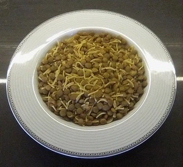

Lenten Lentil Curry
Simple green lentil recipe. Suitable for Lent.

- Prep time: 5 min
- Cook time: 30-35 min
- Servings : 2
Ingredients
- 200 g (7 oz) green lentils
- 50 g (1¾ oz) vermicelli
- 1 tsp curry powder
- ½ tsp paprika powder
- ½ tsp cinnamon powder
- ½ tsp ground sumac
Directions
- Thoroughly rinse the lentils and drain the water.
- Put the lentils in the pot, and add 1 L (0.26 gal) of water.
- Bring to a boil, and gently boil for about 15-20 minutes.
- Drain the water.
- Add the other ingredients to the pot.
- Add 1½-2 tsp of salt and a little bit of ground black pepper.
- Add 0.5 L (0.13 gal) of boiling water.
- Simmer for about 10 minutes.
Have a blessed Lent.
Contribution
- Sinan Kurtulmuş - website